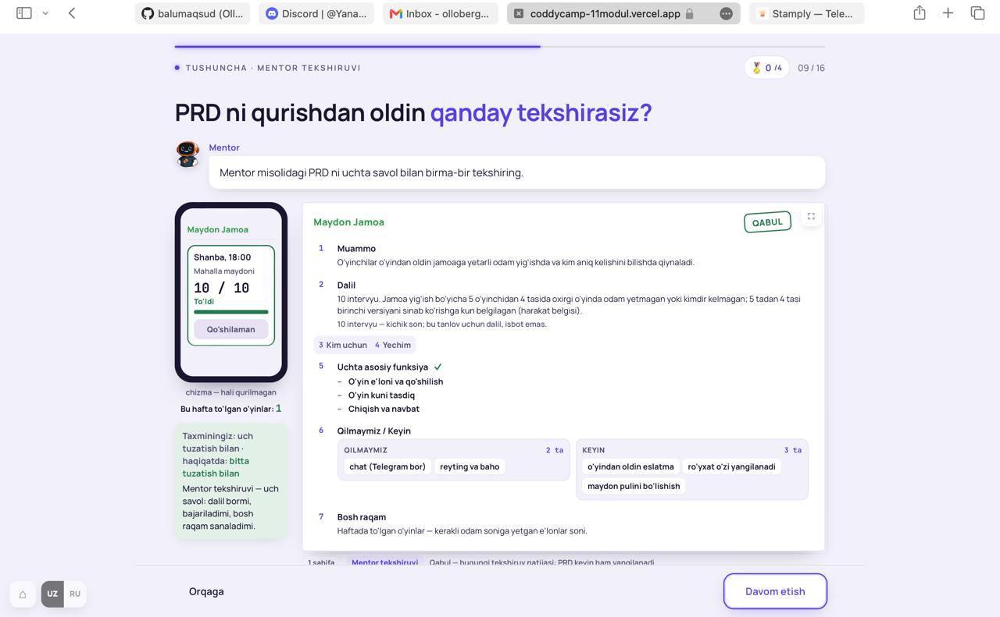
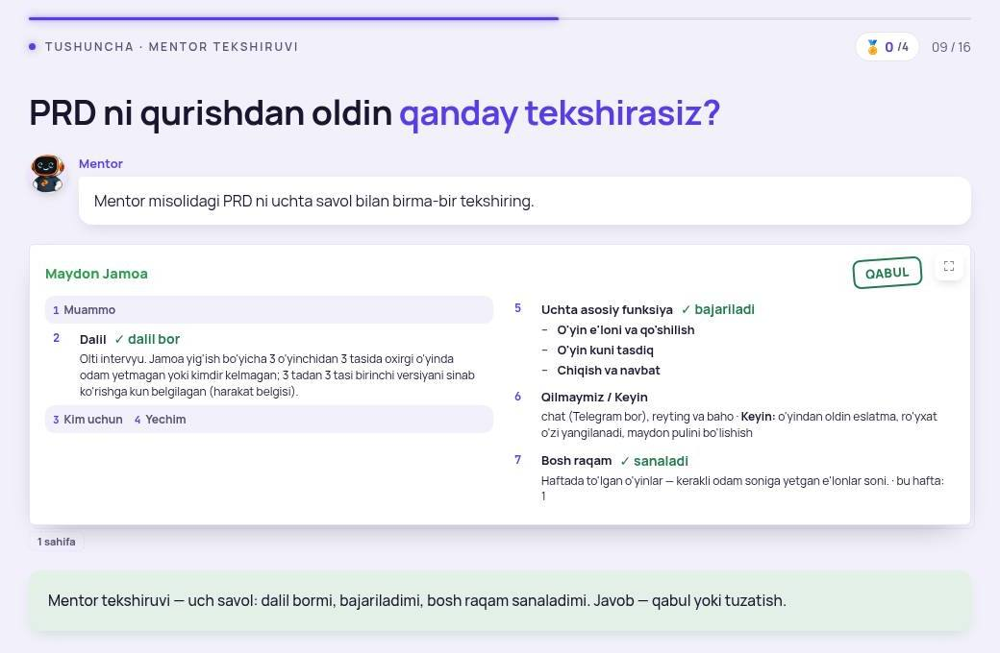
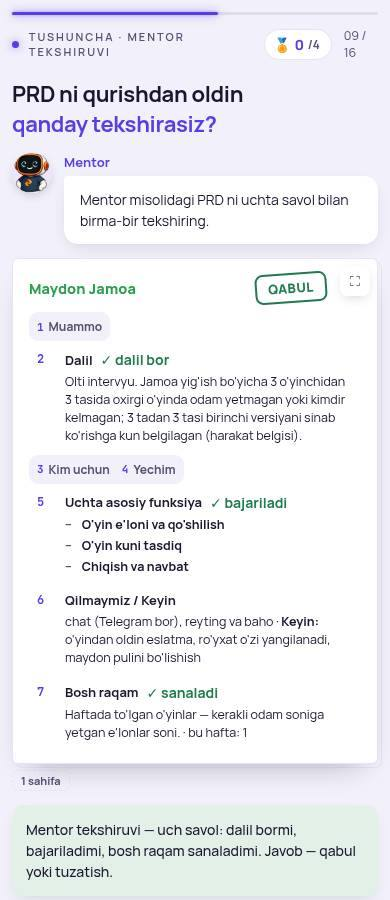
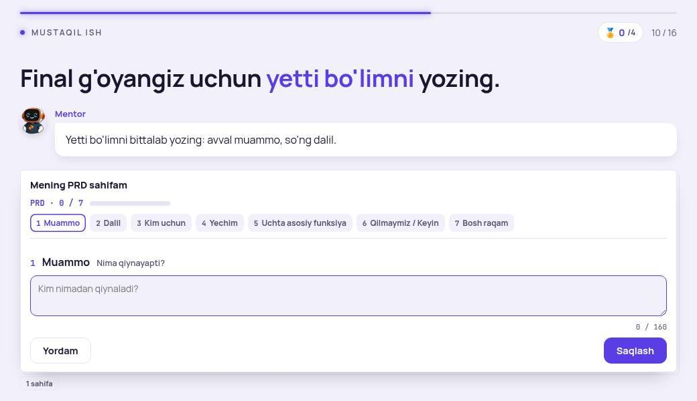
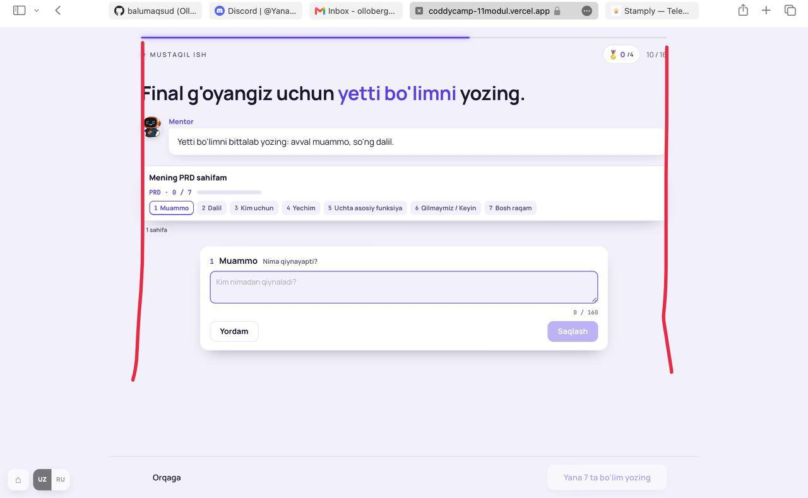
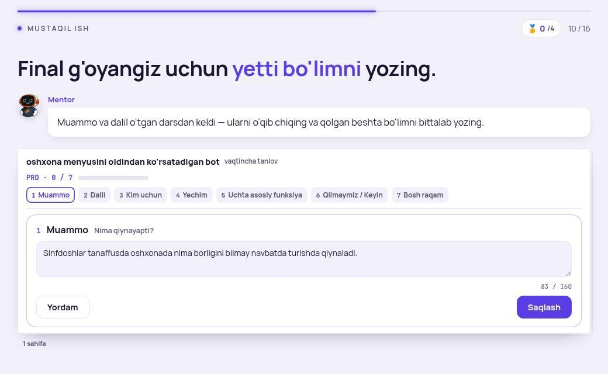

Dars oxirida o'quvchi: o'z qadam sonlaridan foizlarni hisoblab, odamlar qayerda to'xtab qolayotganini topadi va gipoteza yozadi.
Siz: «juda to'lib ketgan UI, bunday pagelar ko'p, nima ketyatganini tushunish qiyin, animatsiya keraksizmi — dizayn va metodika tomondan o'ylash kerak».

Ekranda bir vaqtda 6 narsa: telefon («10 / 10 · To'ldi» — faqat 3-savolning dalili edi) · «Bu hafta to'lgan o'yinlar: 1» · taxmin natijasi (yashil) · Mentor tekshiruvi izohi · to'liq PRD (7 bo'lim, 6-bo'limda ikki quti) · «Qabul» muhri + sahifa ostidagi yorliq va kulrang qator. O'quvchi savollarga javob berib bo'ldi — endi unga faqat natija kerak: tekshirilgan PRD va bitta xulosa.
Metodika. Bu ekranning maqsadi — «Mentor tekshiruvi = uch savol» tushunchasi. Yakunda o'quvchi ko'rishi kerak: qaysi uch bo'lim tekshirildi (✓), nima tuzatildi (Keyin'ga ketgan funksiya), hukm (Qabul). Telefon va sanoq — jarayon dalili, yakunda o'z ishini qilib bo'lgan.
Animatsiya. Hozir: sahifa tepaga suriladi, 3,2 soniya kutib «tinch» holatga o'tadi, son sanab chiqadi, funksiya «Keyin»ga uchadi. Ma'no tashiydigani ikkitasi: ✓ ning bo'limga tushishi va funksiyaning «Keyin»ga uchishi (tuzatishni ko'rsatadi). Qolgani — bezak.
«Bunday pagelar ko'p» — bu sinf: ish tugagach jarayon elementlari ekranda qoladi. A ma'qul bo'lsa: DARS_ETALON 213.14 «Yakun — faqat natija» yoziladi, m9-05 9-ekran pilot, keyin 7–14-M dagi hamma tushuncha-ekranlarining yakun holati o'lchanadi (telefon/harakat/alohida izoh qolganlari) va ro'yxat bilan sizga ko'rsatiladi — avval o'lchov, keyin supurish.



Qonun: DARS_ETALON 213.14 «Yakun — faqat natija» yozildi (pilot m9-05 9-ekran); 213.3 ga «karta ichidagi karta ramkasiz» izohi (327). Keyingi qadam — sizning ko'rigingizdan so'ng: 7–14-M tushuncha-ekranlarining yakun holatini o'lchash (storedAnswer bilan surat) va ro'yxat.


Tashxis. Brauzeringizda eski build qolgan (kesh) yoki sayt eski. Taklif: 11-M QA saytini qayta deploy qilaman, siz sahifani qattiq yangilaysiz (Cmd+Shift+R). Kod o'zgarishi kerak emas.